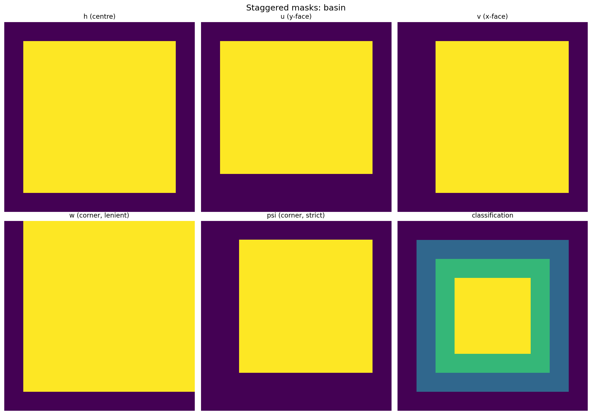
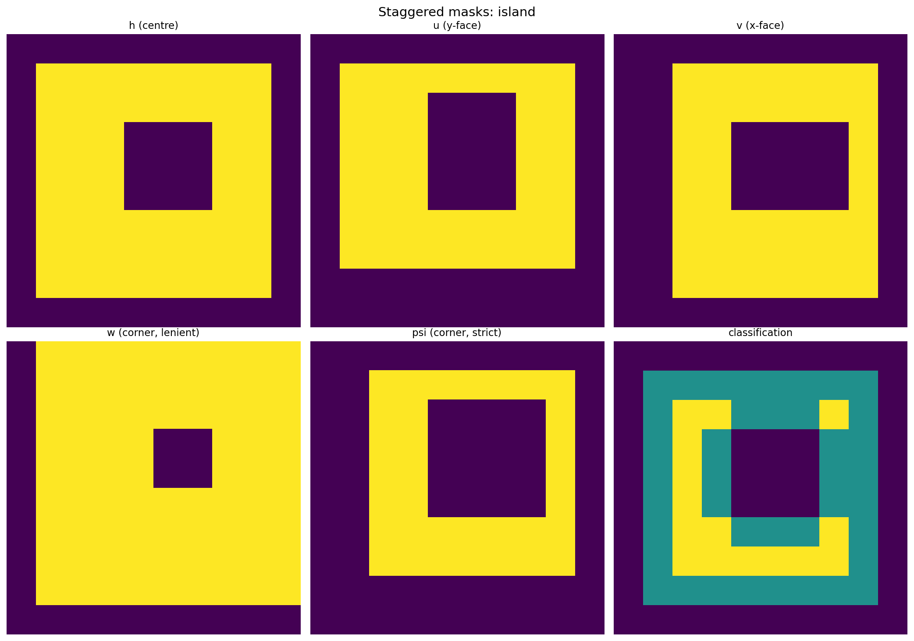
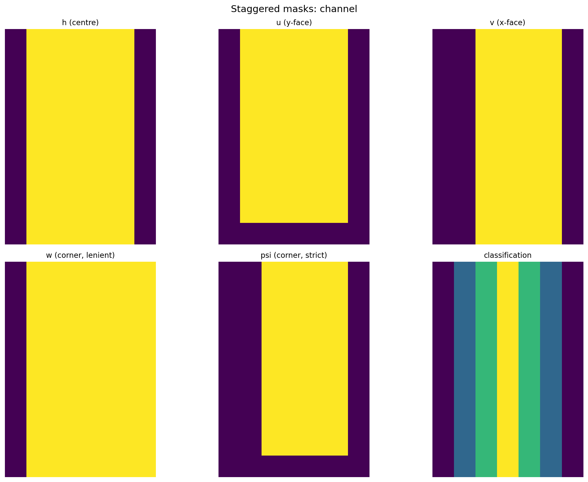
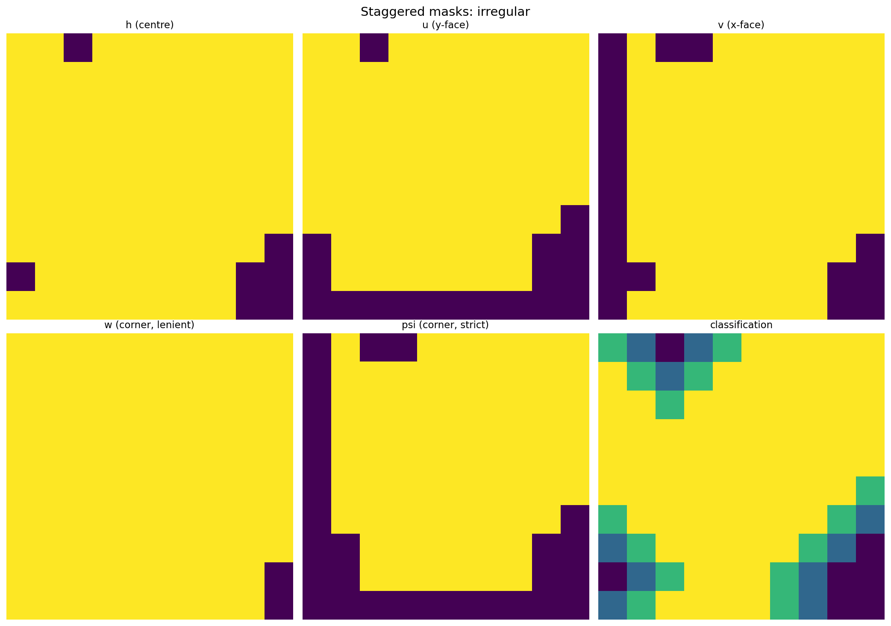
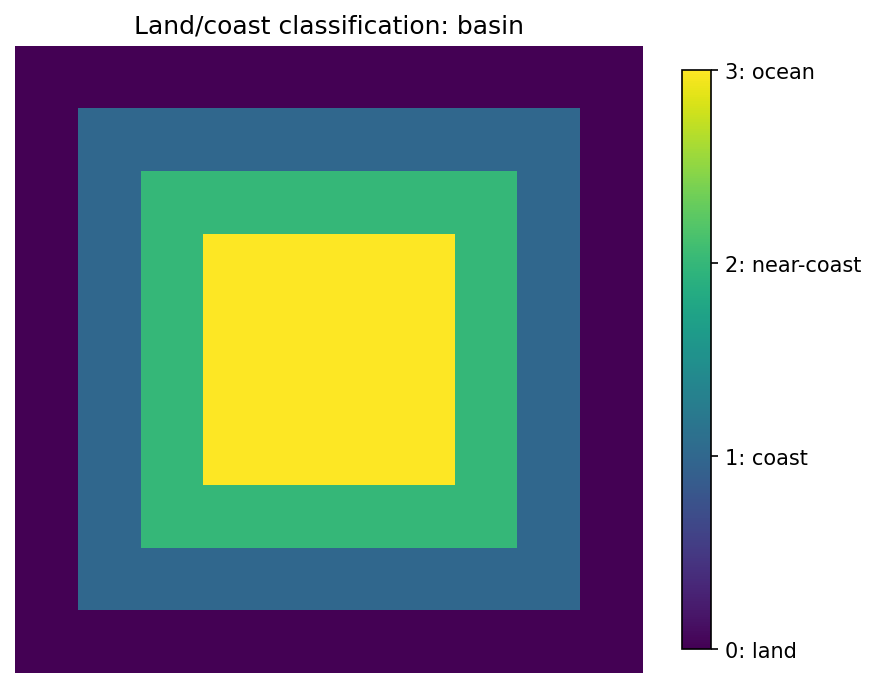
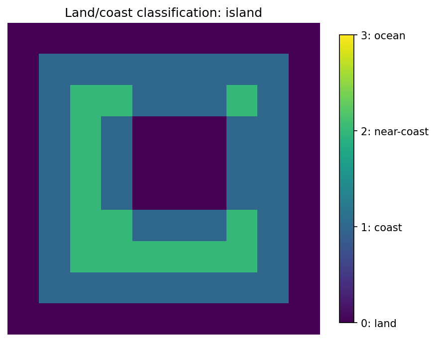
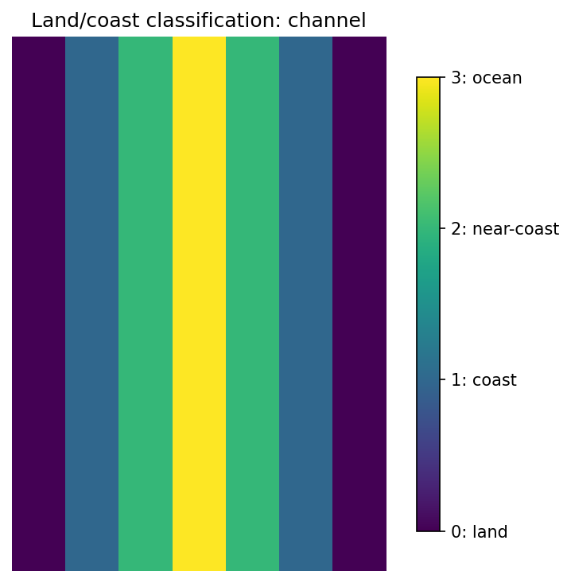
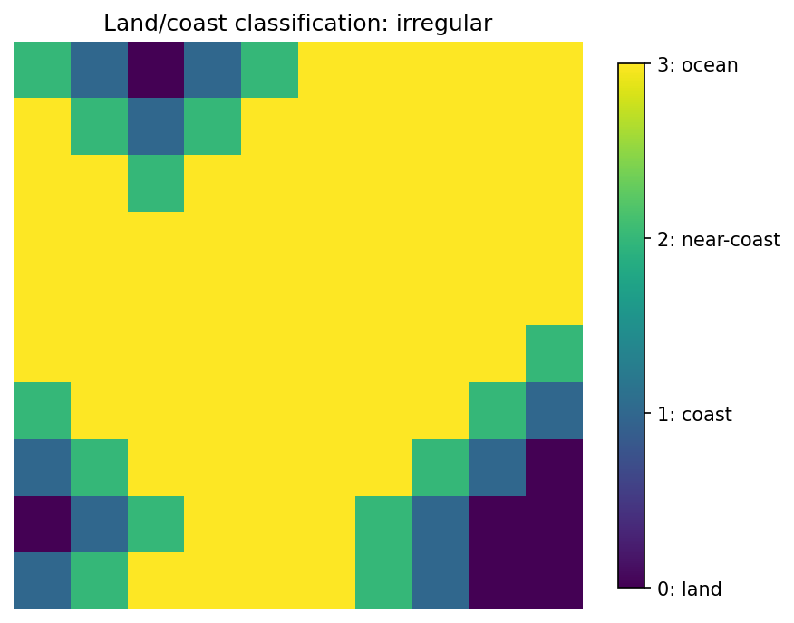

Arakawa C-Grid Masks
finitevolX provides three mask classes — Mask1D, Mask2D, Mask3D —
that describe land/ocean geometry on an Arakawa C-grid. Every class
operator in the package takes an optional mask class attribute of
the matching dimension, so masks travel with operators rather than
getting threaded through every call. See the
Operator API section below
for the full pattern and the stagger → mask field mapping.
The rest of this page documents Mask2D — the 2-D class — but the
same factories (from_mask, from_dimensions, from_center,
from_u_face …) and the same staggered-derivation pipeline are
available on Mask1D (no v-face, no corner) and Mask3D (adds a
w vertical face and native 3-D classification / stencil capability).
The Arakawa C-grid layout
Mask2D builds all staggered masks from a single cell-centre
wet/dry field, following the Arakawa & Lamb (1977) grid layout:
| Point | Location | Variable |
|---|---|---|
| h | cell centre | tracers, height, pressure |
| u | east face | zonal velocity |
| v | north face | meridional velocity |
| xy_corner | NE corner (lenient) | vorticity |
| xy_corner_strict | NE corner (strict) | streamfunction |
All staggered points use the same-index, positive half-step convention:
u[j, i] is the east face of h[j, i], v[j, i] is the north face,
and xy_corner[j, i] is the NE corner — matching CartesianGrid2D.
See the Arakawa C-grid discretization notes for
the underlying convention and a comparison with negative half-step
alternatives.
Creating masks
All you need is a binary h-grid mask (True = ocean, False = land). The factory method derives everything else:
import numpy as np
from finitevolx import Mask2D
# Rectangular basin with land boundaries
n = 10
h_mask = np.ones((n, n), dtype=bool)
h_mask[0, :] = h_mask[-1, :] = False
h_mask[:, 0] = h_mask[:, -1] = False
# With an island
h_mask[4:7, 4:7] = False
masks = Mask2D.from_mask(h_mask)
For an all-ocean domain, use the shortcut:
Or construct from any float field at a known grid position, where
NaN marks dry cells:
# From a field at cell centres (T-points): SSH, temperature, pressure, …
masks = Mask2D.from_center(ssh_field)
# From a field at u-faces, v-faces, or xy-corners. Pass `mode=` to
# choose the inversion strategy when the inverse mapping back to the
# h-grid is non-unique:
# mode='permissive' → h wet iff *any* surrounding face/corner wet
# mode='conservative' → h wet iff *all* surrounding face/corner wet
masks = Mask2D.from_u_face(u_field, mode="permissive")
masks = Mask2D.from_v_face(v_field, mode="permissive")
masks = Mask2D.from_corner(vorticity_field, mode="conservative")
Staggered variable locations
Each variable type sits at a different position within a grid cell. The figures below show the actual staggered positions for several domain topologies:
Rectangular basin

Basin with island

Zonal channel

Irregular coastline

Land / coast classification
The mask includes a 4-level classification (0 = land, 1 = coast, 2 = near-coast, 3 = open ocean):
Rectangular basin

Basin with island

Zonal channel

Irregular coastline

Vorticity boundary classification
At xy-corner points, cells are classified based on their relationship to adjacent velocity faces:
- xy_corner_valid — interior: all 4 adjacent velocity faces are wet
- xy_corner_y_wall — on a vertical (y-direction) boundary
- xy_corner_x_wall — on a horizontal (x-direction) boundary
- xy_corner_convex — at convex corners (both boundary types)
Stencil capability and adaptive WENO
Each cell stores how many contiguous wet neighbours it has in each
direction via StencilCapability2D. This drives adaptive stencil
selection for WENO reconstruction near coastlines:
# Mutually-exclusive masks: largest usable stencil at each point
adaptive = masks.get_adaptive_masks(direction="x", source="h")
# adaptive[2] → 1st-order upwind only
# adaptive[4] → WENO3
# adaptive[6] → WENO5
# adaptive[8] → WENO7
# adaptive[10] → WENO9
Jupyter notebook
A complete interactive demo is available as a jupytext notebook:
notebooks/demo_masks.py
Operator API: how operators consume masks
Every class operator in finitevolx takes an optional mask class
attribute of the matching dimension. The mask travels with the
operator; once constructed, method calls don't need to pass the mask
through per call.
import finitevolx as fvx
grid = fvx.CartesianGrid2D.from_interior(64, 64, 1e6, 1e6)
mask = fvx.Mask2D.from_mask(h_mask)
# Mask as a class attribute — set once, consumed on every call.
diff = fvx.Difference2D(grid=grid, mask=mask)
adv = fvx.Advection2D(grid=grid, mask=mask)
diff_op = fvx.Diffusion2D(grid=grid, mask=mask)
# Unmasked operators are the default — just omit `mask=`.
diff_noop = fvx.Difference2D(grid=grid) # mask=None
The three-layer rule
finitevolx keeps masks out of the lowest two layers, so stencil and
functional code stays coordinate-and-mask agnostic:
| Layer | Example | Mask-aware? |
|---|---|---|
| Layer 1 — raw stencils | diff_x_fwd, avg_y_bwd, … in stencils.py |
No |
| Layer 2 — functional helpers | _curl_2d, divergence_2d, diffusion_2d, kinetic_energy, enstrophy, geostrophic_velocity_sphere, arakawa_jacobian, … |
No |
| Layer 3 — class operators | Difference2D, Interpolation2D, Divergence2D, Vorticity2D, Coriolis2D, Advection2D, Diffusion2D, MomentumAdvection2D, and their 1D / 3D / Spherical* siblings |
Yes, via self.mask |
If you call a Layer-2 functional helper and want masked output, apply
the mask at the call site: ke = kinetic_energy(u, v) * mask.h.
Dimension → mask type mapping
Operators take the mask class matching their dimension:
| Operator class | Mask type | Example |
|---|---|---|
*1D (Difference1D, Interpolation1D, Advection1D) |
Mask1D \| None |
Difference1D(grid=g, mask=Mask1D.from_mask(h)) |
*2D (every 2-D operator) |
Mask2D \| None |
Advection2D(grid=g, mask=Mask2D.from_mask(h)) |
*3D (every 3-D operator) |
Mask3D \| None |
Diffusion3D(grid=g, mask=Mask3D.from_mask(h)) |
Spherical 2-D / 3-D operators take the Cartesian Mask2D /
Mask3D — the mask geometry is coordinate-agnostic at the
post-compute-multiply layer. A dedicated SphericalMask2D /
SphericalMask3D is a TODO for future work.
Stagger → mask field mapping
The core convention is one operator output → one mask field, chosen by the operator's output stagger. Every operator follows the same mapping:
| Output stagger | Mask field | Operators / methods |
|---|---|---|
| T (cell centre) | mask.h |
divergence, laplacian, U→T / V→T / X→T differences and interpolations, Advection*, Diffusion*, BiharmonicDiffusion* |
| U (east face) | mask.u |
T→U / X→U / V→U differences and interpolations, grad_perp u-component, Coriolis* du_cor, MomentumAdvection* du_adv |
| V (north face) | mask.v |
T→V / X→V / U→V, grad_perp v-component, Coriolis* dv_cor, MomentumAdvection* dv_adv |
| X (NE corner) | mask.xy_corner_strict |
curl, T→X / U→X / V→X, relative & potential vorticity, pv_flux_* U/V-stagger outputs where applicable |
The X-output mapping uses the strict 4-of-4 corner mask
(xy_corner_strict) because a corner-output value is trusted only when
all four surrounding T-cells are wet. The lenient
xy_corner mask is not currently consumed by any operator — it's
available for users building their own.
Four patterns for mask application
Under the hood, operators apply masks in one of four patterns depending on what's safe. You don't need to know which is which for normal usage — the result is always "dry cells at the output stagger are exactly 0" — but the distinctions matter when customising or inheriting:
Pattern 1 — Post-compute multiply. Used by the majority of
operators: Difference*, Interpolation*, Vorticity3D,
Spherical*. Compute the output as if all-ocean, then multiply by the
stagger-matched mask field at the end. Cheap and simple.
Pattern 2 — Pass-down into sub-operators. Used by composed
operators with no tricky division — Divergence2D, Vorticity2D,
MomentumAdvection2D. The outer class wires its mask into every
internal sub-operator at __init__ time, so intermediate staggered
fields are already zero at dry cells. The outer method trusts the
pass-down and typically doesn't need an extra multiply.
- Special case for
Vorticity2D.potential_vorticity: the(zeta + f) / hdivision would produce NaN at every dry X-corner under pass-down (becauseh_on_q == 0). The method preserves the existing "NaN at wet zero-thickness" sentinel but replaces mask-induced NaNs with exact 0 via a finaljnp.where(mask.xy_corner_strict, out, 0). Same fix applies toSphericalVorticity2D.potential_vorticity.
Pattern 3 — Intermediate flux masking. Used by Diffusion2D and
Diffusion3D only. Post-compute multiply is not sufficient for
diffusion because the divergence at wet T-cells adjacent to land would
be contaminated by polluted dry-side face fluxes. Instead the class
wrappers apply the mask in three steps:
The shared kernel is _diffusion_2d_impl(h, kappa, dx, dy, mh, mu, mv)
in finitevolx._src.diffusion.diffusion; Diffusion3D vmaps it
per-z-slice with sliced masks (Pattern B in #209's terminology).
Pattern 4 — Final-only multiply with mask-free inner harmonic.
Used by BiharmonicDiffusion2D and BiharmonicDiffusion3D. The
biharmonic operator is two successive harmonic Laplacians; the mask is
applied only to the final ∇⁴ tendency via * mask.h. Critically,
the inner harmonic Diffusion is deliberately built with mask=None
even when the outer biharmonic has a mask — masking the intermediate
Laplacian would zero lap1 at dry cells, which acts as a forced
Dirichlet-0 BC for the second harmonic pass and corrupts the ∇⁴
stencil at wet cells adjacent to land. The same applies to the
3-D class.
Pattern A vs Pattern B for 3-D operators
The 3-D wrappers that vmap an inner 2-D operator over z-levels
(Vorticity3D, Coriolis3D, Spherical*3D, BiharmonicDiffusion3D,
MomentumAdvection3D) use Pattern A (post-compute): the inner 2-D
op is always constructed mask=None and the 3-D wrapper owns the
mask, applying * self.mask.<stagger> after the vmap and
zero_z_ghosts. This is cleaner than trying to thread per-z mask
slices into the vmap'd 2-D op.
Diffusion3D is the exception and uses Pattern B (vmap with
per-z sliced masks) because its intermediate flux masking makes
Pattern A incorrect. See the Diffusion module docstring for the
implementation.
Advection hierarchy pre-build
Advection1D / Advection2D / Advection3D are the special case
where "mask as field" matters for performance, not just ergonomics.
When constructed with a mask, __init__ pre-builds the (2, 4, 6)
adaptive stencil hierarchy via mask.get_adaptive_masks(...) — once,
up-front — and stores the result on the operator. Every subsequent
call then uses the cached hierarchy, narrowed at dispatch time (by the
narrow_mask_hierarchy helper) to the subset of tiers the chosen
reconstruction method needs:
adv = fvx.Advection2D(grid=grid, mask=mask) # builds (2,4,6) hierarchies
# First call uses the cached hierarchies; no get_adaptive_masks recomputation.
dh_dt = adv(h, u, v, method="weno5")
# A second method call on the same instance reuses the cache and
# narrows to (2, 4) on the fly for WENO3.
dh_dt = adv(h, u, v, method="weno3")
This is the main reason the Advection API moved from a per-call
mask= kwarg to a class field: masks under JIT now compile once per
Advection* instance instead of once per (instance, method) pair.
Changing the mask on an operator
equinox Modules are immutable — op.mask = new_mask will raise. To
"change" a mask on an operator, use eqx.tree_at to produce a new
operator instance with the field updated:
import equinox as eqx
# Start with one mask ...
adv_summer = fvx.Advection2D(grid=grid, mask=summer_mask)
# ... and produce a new instance with a different mask. The grid and
# reconstruction module are shared (no copy); only `mask` (and, for
# Advection, the pre-built hierarchies — eqx.tree_at reconstructs the
# __init__ path correctly for all affected fields) is swapped.
adv_winter = eqx.tree_at(lambda o: o.mask, adv_summer, winter_mask)
For composed operators (Divergence2D, Vorticity2D, MomentumAdvection2D,
etc.) the outer self.mask is independent of the mask stored on the
internal sub-operators, so you may also need to swap those — the
simpler alternative is usually to just construct a fresh operator
from scratch:
Migration from the old per-call kwarg API
Some operators used to take mask= as a per-call keyword argument.
In the current API, the mask is always a class field. Translation:
# Old (removed)
adv = fvx.Advection2D(grid=grid)
adv(h, u, v, method="weno5", mask=mask)
cor = fvx.Coriolis2D(grid=grid)
cor(u, v, f, mask=mask)
# New
adv = fvx.Advection2D(grid=grid, mask=mask)
adv(h, u, v, method="weno5")
cor = fvx.Coriolis2D(grid=grid, mask=mask)
cor(u, v, f)
Diffusion2D, Diffusion3D, diffusion_2d, Difference2D.grad_perp,
kinetic_energy, enstrophy, and potential_enstrophy used to take
raw-array mask_h / mask_u / mask_v keyword arguments. Those are
all removed:
Diffusion2D/Diffusion3Dtake aMask2D/Mask3Dclass field instead.diffusion_2d(the Layer-2 free function) is mask-free. If you want masked diffusion, use the class operator.Difference2D.grad_perpuses theself.maskclass field (set onDifference2Dat construction).kinetic_energy/enstrophy/potential_enstrophyare Layer-2 mask-free. Apply masks at the call site: